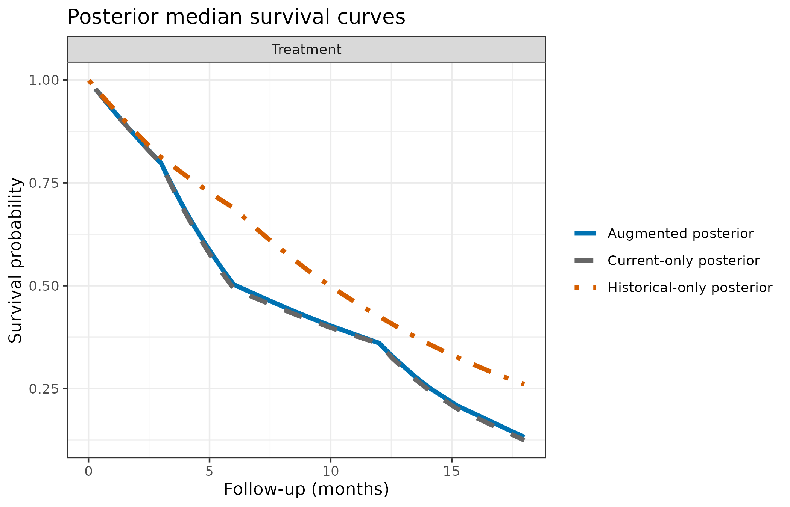
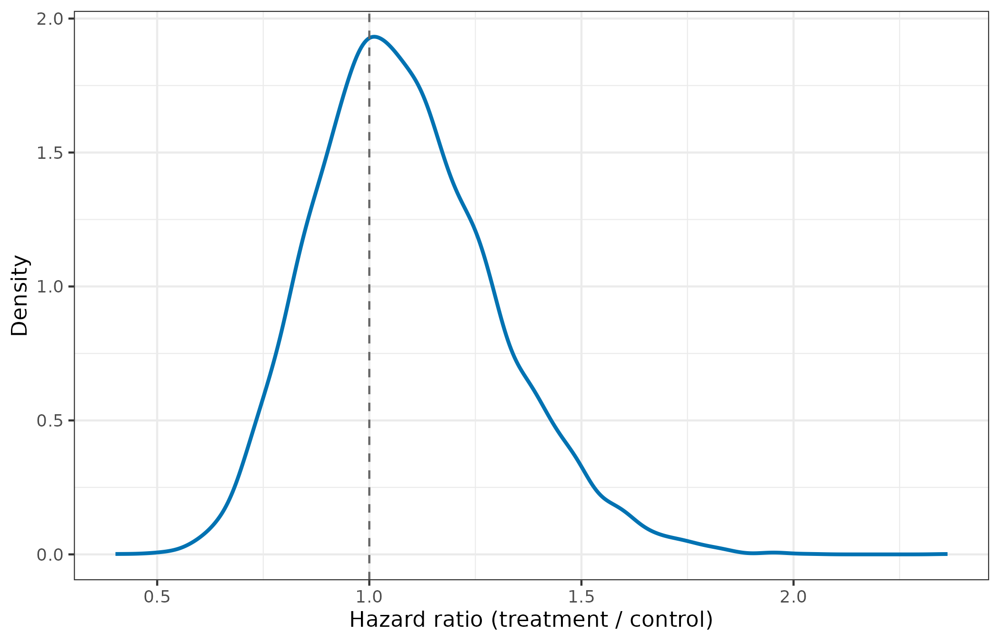

Survival outcomes with bayesDP
Donnie Musgrove
Graeme L. Hickey
2026-11-15
Source:vignettes/bdpsurvival-vignette.Rmd
bdpsurvival-vignette.RmdPurpose and current limitations
bdpsurvival() uses piecewise constant hazards for
right-censored outcomes. In one arm, the estimand is survival
probability at a specified time. With two arms, the reported effect is
an approximate common log hazard ratio, treatment relative to
control.
Two limitations remain under investigation: the default Monte Carlo
weight calculation (issue
16) and the baseline-prior contribution during historical
augmentation (issue
17). These examples use method = "fixed", describe the
implemented prior update, and calculate tables directly from posterior
draws. They illustrate current behaviour; they do not validate the
unresolved procedures for trial design.
See the borrowing overview for weighting
choices and interpretation. The function default is
method = "mc", so the explicit method argument matters.
Data and follow-up
Supply current and historical data frames with compatible columns.
Use Surv(time, status) ~ 1 for a one-arm analysis, or
Surv(time, status) ~ treatment for two arms. Code
status = 1 for an event and status = 0 for
right censoring; time is the observed event or censoring
time. For two arms, code treatment = 1 and control as 0,
and provide both arms in both studies for the examples below. Additional
covariate adjustment is not implemented.
Choose a time unit, clinically relevant survival horizon, and
interval boundaries. breaks contains positive internal
cutpoints, without zero or infinity. The final interval extends beyond
the last cutpoint. By default the cutpoints are the pooled observed-time
20th, 40th, 60th, and 80th percentiles; these are quantiles of
event-or-censoring times, not estimated survival quantiles. The examples
prespecify cutpoints and the horizon.
One-arm example with censoring
We simulate event times with mean 10 months for 60 current participants and mean 11 months for 100 historical participants. Independent censoring times have mean 18 months, with additional administrative censoring at 18 months. The observed time is the minimum of event and censoring times.
simulate_followup <- function(n, mean_event, mean_censor, horizon) {
event_time <- rexp(n, rate = 1 / mean_event)
censor_time <- pmin(rexp(n, rate = 1 / mean_censor), horizon)
data.frame(time = pmin(event_time, censor_time),
status = as.integer(event_time <= censor_time))
}
set.seed(42)
current <- simulate_followup(60, mean_event = 10, mean_censor = 18, horizon = 18)
historical <- simulate_followup(100, mean_event = 11, mean_censor = 18, horizon = 18)
knitr::kable(data.frame(
source = c("Current", "Historical"),
participants = c(nrow(current), nrow(historical)),
events = c(sum(current$status), sum(historical$status)),
censored = c(sum(current$status == 0), sum(historical$status == 0))
))| source | participants | events | censored |
|---|---|---|---|
| Current | 60 | 36 | 24 |
| Historical | 100 | 54 | 46 |
set.seed(42)
current_only <- bdpsurvival(Surv(time, status) ~ 1,
data = current, data0 = historical, breaks = c(3, 6, 12), surv_time = 6,
a0 = 0.1, b0 = 0.1, method = "fixed", fix_alpha = TRUE, alpha_max = 0)
set.seed(42)
discounted <- bdpsurvival(Surv(time, status) ~ 1,
data = current, data0 = historical, breaks = c(3, 6, 12), surv_time = 6,
a0 = 0.1, b0 = 0.1, method = "fixed", fix_alpha = FALSE, alpha_max = 1)
set.seed(42)
full_borrowing <- bdpsurvival(Surv(time, status) ~ 1,
data = current, data0 = historical, breaks = c(3, 6, 12), surv_time = 6,
a0 = 0.1, b0 = 0.1, method = "fixed", fix_alpha = TRUE, alpha_max = 1)
fits <- list("Current only" = current_only, "Discounted" = discounted,
"Full borrowing" = full_borrowing)
comparison <- do.call(rbind, lapply(fits, function(fit) {
arm <- fit$posterior_treatment
c(alpha = arm$alpha_discount, median = median(arm$posterior_survival),
lower = unname(quantile(arm$posterior_survival, 0.025)),
upper = unname(quantile(arm$posterior_survival, 0.975)))
}))
knitr::kable(comparison, digits = 4,
col.names = c("Historical weight", "Median S(6)", "Lower 95% CrI", "Upper 95% CrI"))| Historical weight | Median S(6) | Lower 95% CrI | Upper 95% CrI | |
|---|---|---|---|---|
| Current only | 0.0000 | 0.4945 | 0.3571 | 0.6294 |
| Discounted | 0.0236 | 0.5016 | 0.3676 | 0.6336 |
| Full borrowing | 1.0000 | 0.6171 | 0.5331 | 0.6955 |
The estimated historical weight is 0.0236. The augmented posterior median six-month survival is 0.5016. These summarize survival probability at six months, not median survival time. The full-borrowing result includes the extra baseline-prior contribution described below and should not be called an ordinary pooled analysis.
print() gives a compact summary at the requested
horizon. Its sample size and event count refer to current participants.
The longer summary() table reports risk sets immediately
before each observed event or censoring time, alongside posterior median
survival, posterior SDs, and 95% equal-tailed credible intervals.
Splitting follow-up into hazard intervals does not create additional
participants or observation times. These risk sets describe the observed
current cohort; historical borrowing changes the survival estimates, not
the numbers at risk.
print(discounted)##
## One-armed bdp survival
##
##
## n events surv_time median lower 95% CrI upper 95% CrI
## 60 36 6 0.5016 0.3676 0.6336
Posterior median survival curves for the estimated-borrowing fit. These are model-based curves, not Kaplan–Meier estimates; uncertainty is summarized in the six-month table.
Two-arm example
Add independent current and historical controls with mean event time 12 months, using the same censoring mechanism. All four sources are present.
set.seed(101)
control <- simulate_followup(60, mean_event = 12, mean_censor = 18, horizon = 18)
control0 <- simulate_followup(100, mean_event = 12, mean_censor = 18, horizon = 18)
current_two <- rbind(transform(current, treatment = 1), transform(control, treatment = 0))
historical_two <- rbind(transform(historical, treatment = 1), transform(control0, treatment = 0))
set.seed(42)
fit_two <- bdpsurvival(Surv(time, status) ~ treatment,
data = current_two, data0 = historical_two, breaks = c(3, 6, 12),
a0 = 0.1, b0 = 0.1, method = "fixed", fix_alpha = FALSE, alpha_max = 1)
summary(fit_two)##
## Two-armed bdp survival
##
## data:
## Current treatment: n = 60, number of events = 36
## Current control: n = 60, number of events = 30
## Stochastic comparison (p_hat) - treatment (current vs. historical data): 0.1034
## Stochastic comparison (p_hat) - control (current vs. historical data): 0.8144
## Discount function value (alpha) - treatment: 0.1034
## Discount function value (alpha) - control: 0.8144
##
## coef exp(coef) se(coef) lower 95% CI upper 95% CI
## treatment 0.0626 1.0647 0.1975 -0.326 0.4441
log_hr <- as.numeric(fit_two$final$posterior_loghazard)
knitr::kable(rbind(
"Log hazard ratio" = quantile(log_hr, c(0.025, 0.5, 0.975)),
"Hazard ratio" = quantile(exp(log_hr), c(0.025, 0.5, 0.975))
), digits = 4)| 2.5% | 50% | 97.5% | |
|---|---|---|---|
| Log hazard ratio | -0.3260 | 0.0633 | 0.4441 |
| Hazard ratio | 0.7218 | 1.0653 | 1.5591 |
The summary counts 60 current treatment participants and 60 current control participants, regardless of how many intervals their follow-up spans. The treatment and control historical weights are 0.1034 and 0.8144, respectively. The median hazard ratio is 1.0653. For an adverse event, a hazard ratio below 1 favours treatment; the corresponding no-effect value on the log scale is zero. The two rows transform both the estimates and credible limits consistently.
ggplot(data.frame(hazard_ratio = exp(log_hr)), aes(hazard_ratio)) +
geom_density(colour = "#0072B2", linewidth = 0.9) +
geom_vline(xintercept = 1, linetype = 2, colour = "#666666") +
theme_bw() + labs(x = "Hazard ratio (treatment / control)", y = "Density")
Posterior hazard ratio from the approximate common-effect calculation. The dashed line marks a hazard ratio of 1.
Piecewise exponential model
Partition follow-up at 0=\tau_0<\tau_1<\cdots<\tau_J=\infty. For the event-counting convention used when splitting records, interval j is (\tau_{j-1},\tau_j]. Let d_{ij} indicate an event in that interval and t_{ij} be exposure within the interval, not total follow-up. Define D_j=\sum_i d_{ij} and T_j=\sum_i t_{ij}.
The hazard is constant at \lambda_j in interval j. Independent Gamma priors with shape a_0 and rate b_0 give
\lambda_j\mid D_j,T_j\sim\operatorname{Gamma}(a_0+D_j,b_0+T_j).
The defaults are a_0=b_0=0.1. This prior is not flat. The rate parameter has exposure-time units, so a change from months to days requires a corresponding change in b_0 to preserve the same prior information.
Let \ell_j(t)=\max\{0,\min(t,\tau_j)-\tau_{j-1}\} be the length of interval j before t. Then
S(t)=\exp\left\{-\sum_j\lambda_j\ell_j(t)\right\}.
ppexp(t, hazards, cuts = c(0, breaks)) returns 1-S(t) for each row of hazard draws. Survival
probabilities are obtained as one minus that result.
Fixed borrowing comparison
For one arm, compute q=\Pr\{S(t^*)>S_0(t^*)\mid\text{data}\}
from the separate current and historical hazard draws, then p=2\min(q,1-q) and \alpha=\alpha_{\max}W(p). The horizon t^* can therefore change the weight, even
though that weight is applied to all intervals. With
fix_alpha = TRUE, the current one-arm implementation
reports the untransformed directional q
in p_hat; the prescribed weight itself is unaffected. This
inconsistency is part of issue 16.
For two arms, compare current and historical hazards separately within treatment and within control. For each such comparison, form interval log hazard ratios, estimate their variances across draws, and combine them using inverse-variance weights. The directional probability of a positive combined log hazard ratio is then transformed to p=2\min(q,1-q). This is not the probability that two continuous parameters are unequal.
The draw-specific survival formulas are not presented as a valid alternative here because the current implementation’s standardization, repeated transformation, and interval weighting remain unresolved in issue 16.
Implemented historical augmentation
For a fixed weight, the current implementation generates augmented hazards as
\lambda_j\mid\text{data},\alpha\sim\operatorname{Gamma}\left( (1+\alpha)a_0+D_j+\alpha D_{0j}, (1+\alpha)b_0+T_j+\alpha T_{0j}\right).
It discounts the historical posterior parameters, including their baseline-prior terms. A historical-likelihood power update would instead include a_0,b_0 only once (Haddad et al. 2017). The intended construction is under review in issue 17. This distinction matters most when event counts or exposure are small, or the prior is influential. In two arms, the implementation uses separate treatment and control weights in this same update.
Approximate two-arm effect
From the augmented arm hazards, calculate for each draw
R_j^{(s)}=\log\lambda_{jT}^{(s)}-\log\lambda_{jC}^{(s)}, \qquad V_j=\operatorname{Var}_s(R_j^{(s)}),
and combine intervals as
\beta^{(s)}=\frac{\sum_j R_j^{(s)}/V_j}{\sum_j1/V_j}.
This is the implemented inverse-variance approximation to a common log hazard ratio. It is not an exact joint posterior fit of a proportional-hazards Poisson regression. A common treatment effect across intervals is needed for a common-hazard-ratio interpretation; with time-varying effects it is a precision-weighted summary. Large-event approximations such as 1/D_{jT}+1/D_{jC} do not describe the implemented empirical variances exactly and are unsuitable when an interval has no events.
Assumptions and sensitivity
Assume independent participants and censoring independent of the event process within each modeled group. Use the same event definition, time origin, and time units across studies. Inspect follow-up support at the chosen horizon; extrapolation beyond observed follow-up depends on the piecewise hazard assumptions.
Check sensitivity to interval boundaries, survival horizon, Gamma priors, discount function, and maximum weight. Sparse or zero-event intervals can be strongly prior-dependent. Compare the interval-specific effects before interpreting a common hazard ratio. The outstanding issues above must be resolved and the complete procedure evaluated before treating these examples as validation of a trial design.